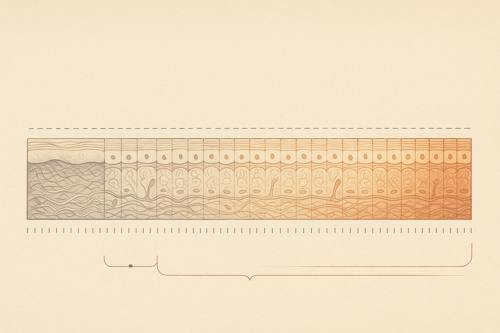
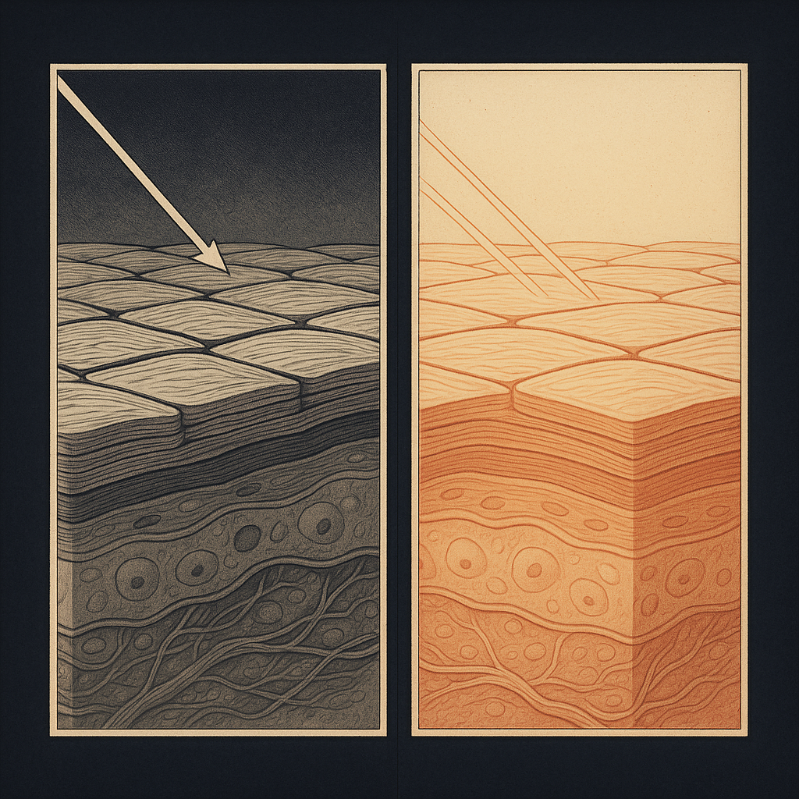
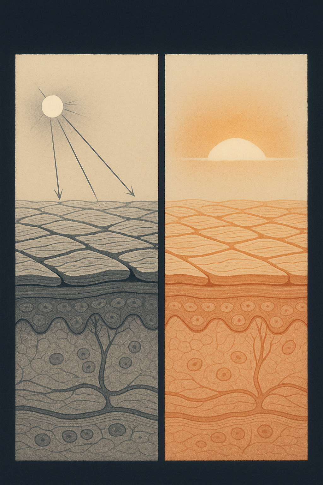

Review below. Reply approve to publish the Facebook post, or tell me edits.

Most people who quit a slow skincare routine do not quit because it failed. They quit because the instrument they were measuring it with (their own eyes, in their own bathroom, at their own mirror) is the least reliable one in the house.
That is not a criticism of anyone's judgement. It is how human perception works. And once you understand the three separate reasons your face is nearly impossible for you to assess, you can build a simple method that gets around all three.
Worth saying plainly before we go further: this article argues that results are genuinely hard for a customer to see. That includes ours. Redermis is new. We do not have a wall of reviews yet, and we are not going to invent any. We would much rather hand you a method for judging things honestly than let someone conclude that nothing happened when the real problem was the measurement.
Because you see your face every single day.
Perception researchers describe this as a just-noticeable difference: the smallest change in a stimulus a person can reliably detect. Below that threshold, the change is real, but you do not register it. Skin renewing itself moves in increments far smaller than that threshold on any given day.
Worse, researchers in that same field describe perception as constantly re-anchoring. Your reference point resets while you sleep, and every morning your brain quietly updates "normal" to whatever it saw last. So you are never comparing today to eight weeks ago. You are comparing today to yesterday, and yesterday to the day before, all the way back, with each comparison sitting below the level you can perceive.
Progress only becomes visible across a gap. This is why you never notice a child growing, but the aunt who last saw them at Easter walks in and says, out loud, that they have shot up. She has the gap. You do not.
More than almost anything else you will do to your face that morning.
Fine lines and texture are not read from colour. They are read from shadow. A line is visible because light hits one side of it and not the other, and your eye interprets that contrast as depth.
Now think about where most people assess their skin. Under overhead downlights. Light coming from almost directly above rakes across the surface of the face at a steep angle, catches every groove, and throws each one into hard relief. It is the same trick a photographer uses to make texture look dramatic. It is superb for finding faults, and worthless for judging change.
Move to soft light from a window at roughly face height and that same light fills the grooves instead of cutting across them. Same skin. Same morning. Twenty minutes apart. Two completely different verdicts.
If your lighting changes between assessments, your lighting is the variable you are measuring, not your skin.
Neither. They are two instruments with two different distortions.
A mirror gives you a laterally reversed image, the version of your face you have looked at your entire life. Every asymmetry in it reads as normal, because it is the arrangement you know. It is also lit by whatever is in that room, at whatever angle.
A phone camera gives you an unflipped face, which is why photos of yourself so often look subtly wrong. On top of that, optics researchers describe short focal lengths as exaggerating whatever sits nearest the lens: phone lenses are short, and you tend to hold them close.
The useful move is not to pick a winner. It is to accept that both distort, then hold one of them absolutely constant so the distortion cancels out across time. Which brings us to the part actually worth saving.
This works on any routine, any product, any device. It costs nothing. The whole principle is that you remove every variable except your skin.
That is the whole method. Screenshot it, then run it on whatever is already on your shelf.
One short note, since it is the category we work in.
Our mask runs on gentle daily photobiomodulation. The term sounds heavier than the idea: certain wavelengths of visible light gently nudging skin cells. Ten minutes a day.
Honest timelines, as we understand them: glow and more even-looking tone tend to show up somewhere around 7 to 10 days, and softened fine-line appearance nearer the 4 to 8 week mark. It is a cosmetic device, not medicine. It is not a filler, not a peel, and there is no guarantee.
That 4 to 8 week window is precisely the span where your own perception is at its least trustworthy: too slow to notice day to day, too gradual to clear what perception researchers would call the just-noticeable-difference threshold, and entirely at the mercy of whichever light you happened to be standing under. Which is why anyone doing red light therapy at home needs the fixed-conditions method more than almost anyone, and why we would rather teach it than ask you to take our word for anything.
Run that method on whatever you are already using.
If it was useful, send it to whoever just told you their routine is not working.
And if you want a closer look at the mask and the full spec afterwards, it is here.

Why nobody can judge their own face fairly, and it is not your fault.
Think about walking into a dim room. For a few seconds it is genuinely dark, then a minute later it is fine. The light never changed. Your baseline moved.
Your face does that every single morning. You are always comparing today to yesterday, and yesterday is almost identical to today. Real change happens slower than your eye recalibrates, so it lands as "nothing".
Fair warning, all of this applies to a light mask too, so it makes our own product harder to sell.
The fixed-conditions method:
**Photograph on day 0, then monthly.** Weekly photos are noise.
**Same window light, same time of day.** Overhead downlights rake across skin and carve every line into shadow. Daylight at face height fills them in. Same skin, two verdicts.
**Bare skin.** No product on top, no filter, no beautify, no zoom.
**Always compare back to day 0**, never to last week.
On ours, honestly: ten minutes a day, a cosmetic device and not medicine, with realistic expectations of glow and more even tone around 7 to 10 days and softened fine-line appearance at roughly 4 to 8 weeks. Which is exactly the window where your own eye is least reliable. If you ever want a closer look at the mask and the full spec, it is here: https://redermis.com.au/products/medical-grade-silicone-7-wevelenghts-photon-led-mask-face-and-neck-red-light-therapy-flexible-facial-mask-repair-skin-wireless-use
Take the day 0 photo tonight, whatever you are using. And tag whoever is convinced their routine is not working.
Downlights or window light: which one do you actually check yourself under? Ours is the bathroom downlight, and it lies.
## Hashtags
#redlighttherapy #skinlongevity #skincaretips #AussieSkincare #LEDfacemask #photobiomodulation
IMAGE PROMPT: Editorial science illustration in the style of Scientific American or Quanta Magazine: a precise two-panel comparative lighting figure, square composition, split by one crisp thin vertical seam down the centre. Both panels show the EXACT SAME specimen: a magnified cross-section of the skin surface drawn as accurate histology, the stratum corneum rendered as flattened overlapping corneocytes bound by fine parallel lipid lamellae, its outer surface carrying a natural microrelief of shallow criss-crossing furrows and small plateaus, with two or three of the living epidermal strata visible beneath as nucleated cells sitting on a basement membrane. Identical geometry, identical furrow depth, identical drawing in both panels. LEFT PANEL: a single hard directional light source from almost directly overhead, its rays drawn as fine hairline diagram lines striking the surface at a steep raking angle, throwing long hard-edged shadows down into every furrow so the surface reads deeply grooved and severe, high-contrast chiaroscuro in cool grey-taupe and charcoal. RIGHT PANEL: the same surface under broad soft light arriving horizontally at surface height, drawn as a wide diffuse warm amber wash with its ray lines nearly parallel to the surface, every furrow filled with light, no cast shadows, the surface reading smooth and calm in warm amber, coral and soft gold. Identical structure, opposite verdict. Deep indigo-charcoal ground, cream diagram-paper panels, fine grain, restrained hairline linework with small angle marks at each light source, generous negative space. The light-versus-shadow contrast between the two panels must be strong enough to read at 200px thumbnail size. Absolutely no text, no words, no numbers, no letters, no labels, no logos, no people, no faces, no product, no mask, no device, no technology, no photographic elements.

Neither one is telling you the truth about your skin.
A mirror gives you a laterally reversed face you have looked at your whole life, so every asymmetry reads as normal. A phone camera gives you an unflipped face at a short focal length, which pushes forward whatever sits closest to the lens.
Two instruments. Two different distortions. And you see your own face every day, so real change lands below the threshold you can perceive.
The fix is not a better mirror. It is fixed conditions.
Four rules:
1. Day 0 photo, then monthly. Never weekly.
2. Same window, same time of day, no overhead downlights.
3. Bare skin. No filter, no beautify, no zoom.
4. Compare to day 0 only. Not to yesterday.
Weekly photos are the trap. The change is smaller than the noise, so you end up reading the lighting, not your skin.
Honest bit: a strict day 0 photo is a far tougher judge than a hopeful glance in the bathroom mirror, and we would rather you used the tougher judge on us too.
If our mask is one of the things you are testing: ten minutes a day, cosmetic device, not medicine. Realistically, glow and tone around 7 to 10 days, softened fine-line appearance at 4 to 8 weeks. Judge it against the rules above, not against how you feel about your face on a given morning.
What is the worst light you have judged your skin under? And tag someone who takes weekly progress pics.
Save this before you take the day 0 photo. Full spec is in the bio if you ever want a closer look.
## Hashtags
#skincareaustralia #skinlongevity #redlighttherapy #skintone #skincaretips #LEDfacemask #skincareroutine #australianskincare #progressphotos
IMAGE PROMPT: Vertical 4:5 editorial science illustration in the style of Scientific American, New Scientist and Quanta Magazine: a precise two-panel comparative lighting figure, tall composition, fully contained within the frame with generous margins and a band of clean empty negative space across the top for a headline, nothing cropped by the edges. Below that headline space, two tall panels sit side by side, divided by one crisp thin vertical seam. Both panels show the EXACT SAME specimen: a magnified cross-section of the skin surface drawn as accurate histology, the stratum corneum rendered as flattened overlapping corneocytes bound by fine parallel lipid lamellae, its outer surface carrying a natural microrelief of shallow criss-crossing furrows and small plateaus, with two or three living epidermal strata visible beneath as nucleated cells on a basement membrane and a woven collagen dermis with one slender capillary loop below. Identical geometry, identical furrow depth, identical drawing in both panels. LEFT PANEL: a single hard directional light source from almost directly overhead, its rays drawn as fine hairline diagram lines striking the surface at a steep raking angle, throwing long hard-edged shadows down into every furrow so the surface reads deeply grooved and severe, high-contrast chiaroscuro in cool grey-taupe and charcoal. RIGHT PANEL: the same surface under broad soft light arriving horizontally at surface height, drawn as a wide diffuse warm amber wash with its ray lines nearly parallel to the surface, every furrow filled with light, no cast shadows, the surface reading smooth and calm in warm amber, coral and rose-gold. Identical structure, opposite verdict. Deep indigo-charcoal ground, bone-cream diagram-paper panels, fine paper grain, restrained hairline linework with a small angle mark at each light source, exact symmetry. The light-versus-shadow contrast between the two panels must be strong enough to read at 200px thumbnail size. Each light source must be drawn as an abstract point or arc of light emitting fine hairline rays, never as a lamp, bulb, globe, light fitting, fixture, torch, sun face or any object or device of any kind. Absolutely no text, no words, no numbers, no letters, no labels, no logos, no people, no faces, no product, no mask, no device, no gadgets, no technology, no photographic elements.
## Title
LED Face Mask Before And After: The Fixed-Conditions Method For Seeing Real Skin Change
## Description
You see your own face daily, so gradual change lands below what you can perceive. Lighting does the rest: overhead downlights rake skin and throw every line into shadow, window light at face height fills them in. Same skin, two verdicts. The fix is fixed conditions. 1. Day 0 photo, then monthly, never weekly. 2. Same window, same time, no downlights. 3. Bare skin, no filter, no zoom. 4. Always compare back to day 0. Judge any ten-minute-a-day device that way. Cosmetic device, not medicine.
## Link
Redermis is a new brand still earning its reviews and we are not going to invent any. If you want a closer look at the mask and the full spec, it is here: https://redermis.com.au/products/medical-grade-silicone-7-wevelenghts-photon-led-mask-face-and-neck-red-light-therapy-flexible-facial-mask-repair-skin-wireless-use
## Hashtags
#RedLightTherapy #LEDFaceMask #SkincareRoutine #SkinLongevity #AtHomeSkincare
## Image
Reuses the Instagram image for this date.